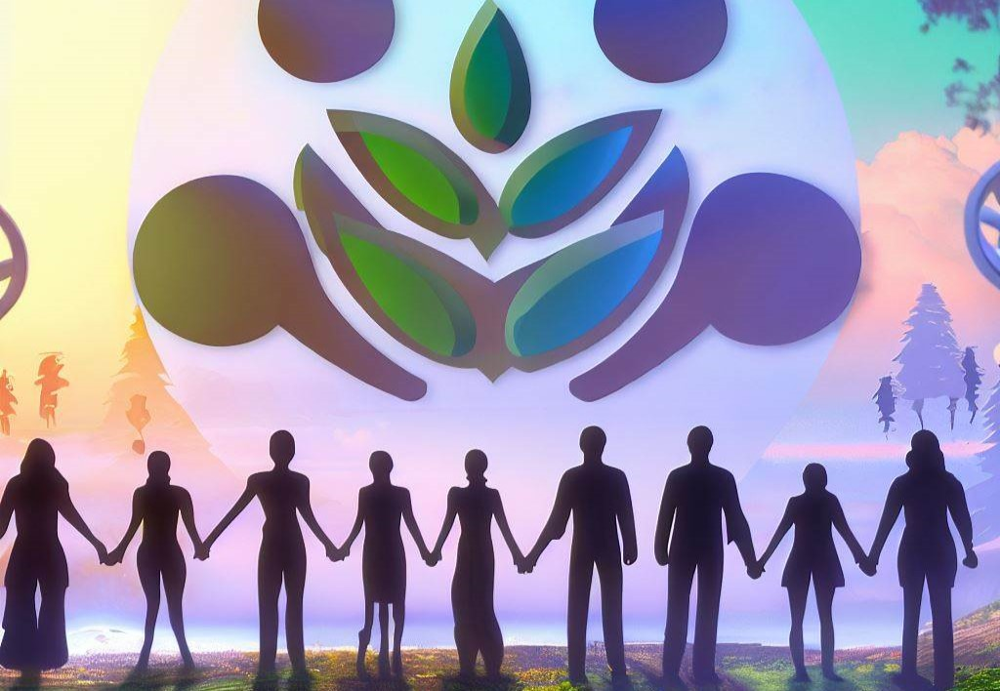

Understanding the Need for Fairness and Equity in Environmental Protection
Environmental justice is the concept of ensuring that all individuals and communities, regardless of their race, ethnicity, or socio-economic status, have access to a healthy environment that is free from environmental hazards. Environmental justice seeks to address the disproportionate burden of environmental risks that marginalized communities often face, and to ensure that all individuals have a voice in environmental decision-making processes.
The origins of the environmental justice movement can be traced back to the 1970s, when activists in communities of color began to draw attention to the unequal distribution of environmental hazards in their neighborhoods. These activists argued that they were unfairly burdened with toxic waste dumps, incinerators, and other hazardous facilities, which led to health problems and reduced quality of life.
Over the years, the environmental justice movement has grown and evolved, and today it encompasses a wide range of issues, from climate change to food justice to clean energy. At its core, however, environmental justice remains focused on the need for fairness and equity in environmental protection.
One of the key principles of environmental justice is the idea that everyone has the right to participate in the decision-making process when it comes to environmental policies and regulations. This means that individuals and communities who are most affected by environmental hazards should have a say in how those hazards are addressed, and that their voices should be taken into account when decisions are made.
Another principle of environmental justice is the need to address the root causes of environmental inequality, which are often linked to systemic issues such as racism, poverty, and economic inequality. For example, low-income communities and communities of color are often disproportionately located near hazardous waste sites and other environmental hazards, in part because they lack the political and economic power to resist these siting decisions.
To address these issues, environmental justice advocates call for policies and programs that promote fairness and equity in environmental protection. These might include community-led initiatives to address environmental hazards, funding for community-based organizations, and increased representation of marginalized communities in environmental decision-making processes.
Ultimately, environmental justice is about recognizing that environmental protection is a human right, and that everyone deserves to live in a healthy environment that is free from environmental hazards. By working towards this goal, we can create a more just and equitable society for all.